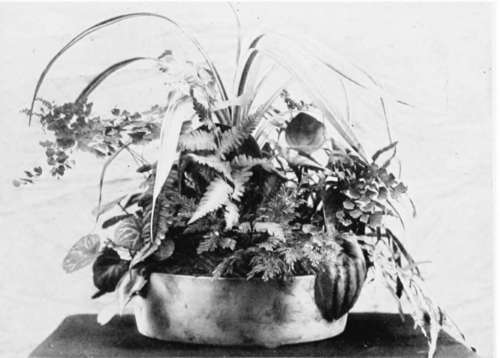

XXXVIII. Hints And Suggestions
Description
This section is from the book "Indoor Gardening", by Eben E. Rexford. Also available from Amazon: Indoor Gardening.
XXXVIII. Hints And Suggestions
THE amateur gardener should always keep a few pots on hand of the various sizes most likely to be useful. There will be breakages, old pots will be outgrown, newly started plants will have to be provided with pots of their own, and if none are at hand when needed, our plants frequently suffer because of our lack of forethought.
Lay in a stock of potting-soil for winter use. It may not be needed. If it is not, no harm is done, for it will come in play next spring. If you do happen to have need of it, you will be glad that you looked ahead and provided for possible emergencies.
It is often an exceedingly difficult matter for the amateur to secure satisfactory potting-soil. She can make a compost that will grow excellent plants by saving up the odds and ends that can be procured about the home-grounds. Rake up the grass-clippings from the lawn, and dump them into a corner. Add to them bits of sward, grass and all. Pour the soapsuds of washing-day over them, and stir them thoroughly with the iron-toothed rake, from time to time. Add good loam to the heap, whenever you happen to find any. Rake up the leaves in fall, and work them into the mixture. Frequent stirrings will be necessary to make the compost alike throughout. It will take some months to make good, useable soil of it, but the time will come when you will find it just the thing needed by your plants. It gives one a feeling of satisfaction to know that she has a generous supply of good potting-soil in reserve, against times of need.
Never allow seed to develop on the plants in the window. Cut off all flowers as they fade, and throw the strength of the plant into the production of other flowers, rather than waste it in perfecting seed for which you have no use. *****
Keep all dead and dying leaves picked off your plants. Burn them as gathered. If this is done, you often prevent the spread of disease. A plant is never pleasant to look at while unsightly leaves remain upon it, or litter the soil in its pot.
*****
Many persons, for the sake of economizing space, attempt to grow miscellaneous collections of plants in large boxes. This method answers well enough for boxes outside the window, in summer, but it is never satisfactory inside, in winter. Not all the plants in such a collection will be likely to require the same treatment, but all of them will have to get along with it. The result is generally disappointing. I would advise keeping your plants in pots by themselves. Do this and you can give each one the care it needs, independently of others.
*****
Many amateurs make the serious mistake of overcrowding their windows with plants. They want to grow everything in a limited amount of space. Do not attempt this if you want fine plants. Have only as many as you can grow without crowding. Any plant that has an individuality of its own must have ample room to develop and display that individuality, in order to be satisfactory. Therefore, consider quality as more important than quantity. A few really good plants will afford you a vast amount of pleasure. A good many inferior ones will make you wonder, sometimes, if plant-growing is worth while.
Here is a formula for an excellent fertilizer that can be prepared at home: Nitrate of soda, 1 pound; Phosphate soda, 1 pound; Sulphate potash, 1 pound. Mix thoroughly. Use a tablespoonful in a gallon of warm water. Do not apply more than half a pint to an eight or nine-inch pot at a time. Use only when the soil in the pot is moist. Do not allow the solution to come in contact with the foliage.
Growing plants, used as table decorations, should never be kept away from the light long at a time, if you expect them to remain healthy. It is an excellent plan to have quite a number of them, and make a change daily. *****
If it becomes necessary to make use of an oil-stove in heating a plant-room in spells of severely cold weather, be sure to get a kind that does not smoke when turned up high enough to give a good flame. It is well to put a pailful of water on top of the stove, at night. This will give off steam enough to keep the air moist, and it will materially assist in keeping up warmth.
Table Decoration Of Growing Plants.
***** There should be a step-ladder wherever plants are grown. And there should be a thermometer, to be frequently consulted, and never ignored.
If you want your house-plants to make a fine show from the street, do not turn them, but let them all grow toward the glass. But the woman who loves flowers, and desires to get the most pleasure possible from them will be more concerned in having them attractive from the inside point of view. We should grow them for the pleasure of the family, rather than the admiration of the passer-by. * * * * *
A frost-proof closet is a good place to keep Tuberous Begonias and Gloxinias, if you haven't a better place for them.
*****
Do not invest in every new plant you happen to see, and admire, until you know something about its requirements. The florist will tell you what kind of treatment it needs, if you ask him. If it is a treatment you can not give, forego your inclinations in the matter, and concentrate your money and your attention on plants adapted to the conditions which prevail in the home.
When you prune your plants, never throw away anything that can be made into a good cutting. If you have no sand-box in which to start it, insert it in the soil of the pot in which the plant from which it was taken is growing. Nine times out of ten you will be successful in propagating plants in this manner. If you do not need another plant of that variety for your own collection, some flower-loving friend will always be glad to get it. Or you can grow it on until summer and give it a place in the garden. A better plan, however, is to distribute the plants among the poor children of the neighborhood, with instructions as to how to grow them.
It is not enough to see that our plants are kept clean and free from insects. The walls and benches of the places in which they are kept should be gone over carefully from time to time. Insects will be found lurking in cracks and crevices, waiting an opportunity to make a raid upon the plants from which you may have driven them. Especially is this true of the mealy-bug, which is often found in great numbers in nooks and corners not frequently interfered with. It is a good plan to move all the plants away from the window and thoroughly scrub every portion of the walls and wood-work, at least once a month.
Do not encourage the plant-beggar. There are always persons in every neighborhood who will not hesitate to ask you to mutilate your choicest plants by giving them cuttings from them. If there happens to be one that can be spared without injury to the plant, give it, but never do so if it will interfere in an way with its satisfactory appearance or development. It may require quite a little effort on your part to say no, but that is the thing you ought to say if you grow plants for the pleasure they can give. Complaints frequently come to me of plants that never get a chance to do anything for the owner because every new branch is spoken for as soon as it appears by some person who could well afford to buy her own plants. These are the persons to say no to. ***** We often see entire collections made up of inferior plants-plants that have very little merit-but which call for just as much attention as better plants would require. Nowadays superior varieties can be bought so cheaply that the woman who loves fine flowers can not afford to waste her time and energy on anything but the best. Whenever you buy a new plant, make sure of its being a good one. By adding really meritorious varieties to your collection from time to time, and discarding old and comparatively worthless ones, you will soon have a collection to be proud of. Then you will wonder how you could ever have been satisfied with the old one. Here, you see, is a practical application of the theory of the "survival of the fittest."
Continue to: